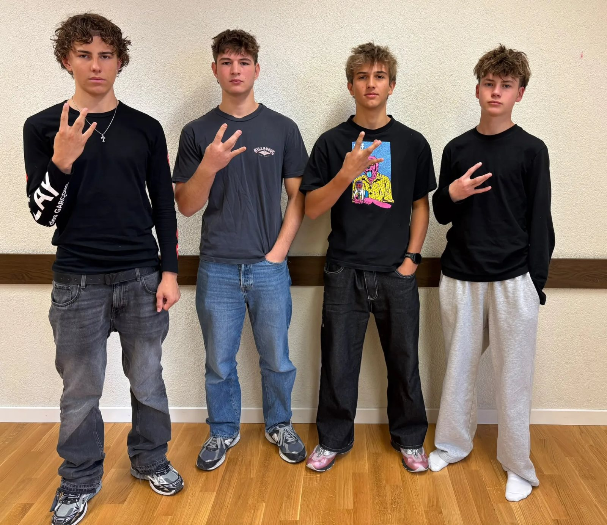

Ziele
Die Kommission fördert Zusammenarbeit, Verantwortungsbewusstsein, Planung, handwerkliche Fähigkeiten und den Umgang mit Natur und Mitmenschen.
Gegründet 2026 · Appenzell Innerrhoden & Ausserrhoden
Gemeinschaftliche Überlebens-, Erkundungs- und Fortbeständigkeitsschulung für den Fall einer ernsten Zwangslage – und die gemeinsame Durchführung von Projekten.
Auf einen Blick
Aktuelles
Die jüngsten Ereignisse der Kommission.
Über uns
Die Waldkommission Appenzell ist eine Gemeinschaft von vier Freunden, gegründet am 23. Januar 2026. Mit «Appenzell» sind ausdrücklich beide Halbkantone gemeint – Appenzell Innerrhoden und Appenzell Ausserrhoden.
Gemäss ihren Statuten dient die Kommission der gemeinschaftlichen Überlebens-, Erkundungs- und Fortbeständigkeitsschulung für den Fall einer ernsten Zwangslage sowie der gemeinsamen Durchführung von Projekten. Ihre bisherigen Projekte spielen sich in den Survival- und Bauspielen «The Forest» und «Minecraft» ab.
Die Kommission fördert Zusammenarbeit, Verantwortungsbewusstsein, Planung, handwerkliche Fähigkeiten und den Umgang mit Natur und Mitmenschen.
Klare Zuständigkeiten: Koordination und Organisation, Sicherheit und Abwehr, Bauleitung sowie allgemeine Arbeitskraft und Unterstützung.
Wichtige Entscheidungen werden gemeinsam getroffen. Ohne Einigung wird abgestimmt – jedes Mitglied hat eine Stimme, die einfache Mehrheit entscheidet.
Eigene Statuten, offizielle Sitzungsberichte und sogar Volksinitiativen: Die Kommission organisiert sich mit einem Augenzwinkern wie eine echte Behörde.
Geschichte und Vergangenheit
Die wichtigsten Ereignisse und Meilensteine der Kommission – rekonstruiert aus Gründungsdokument und Sitzungsberichten.
Mitglieder
Die Zuständigkeiten gemäss Art. 4 der Statuten. Aufgaben können nach Absprache neu verteilt oder gemeinsam erledigt werden.

Aktivitäten und Aufgaben
Alle dokumentierten Aktionen – nach Projekt gefiltert.
Keine Aktionen gefunden. Für diese Filterkombination gibt es keine dokumentierten Aktionen.
Zukunft und geplante Projekte
Klar getrennt: laufende Vorhaben, zurückgestellte Projekte und unverbindliche Ideen. Weitere Projekte können laut Art. 6 der Statuten jederzeit gemeinsam beschlossen werden.
Spiele
Hier finden die Projekte der Kommission statt – vom dichten Wald bis zur Würfelwelt.
Galerie
Die Bilder sind in Alben gegliedert. Ein Album öffnen, um alle Fotos zu sehen.
Dokumente und Pläne
Live-Updates
Sessions live verfolgen und auf einen Blick sehen, woran die Kommission gerade arbeitet.
Kontakt und Informationen
Für Anliegen an die Waldkommission ist die Koordination zuständig. Neue Mitglieder können gemäss Art. 3 der Statuten nur mit Zustimmung der bestehenden Mitglieder aufgenommen werden.